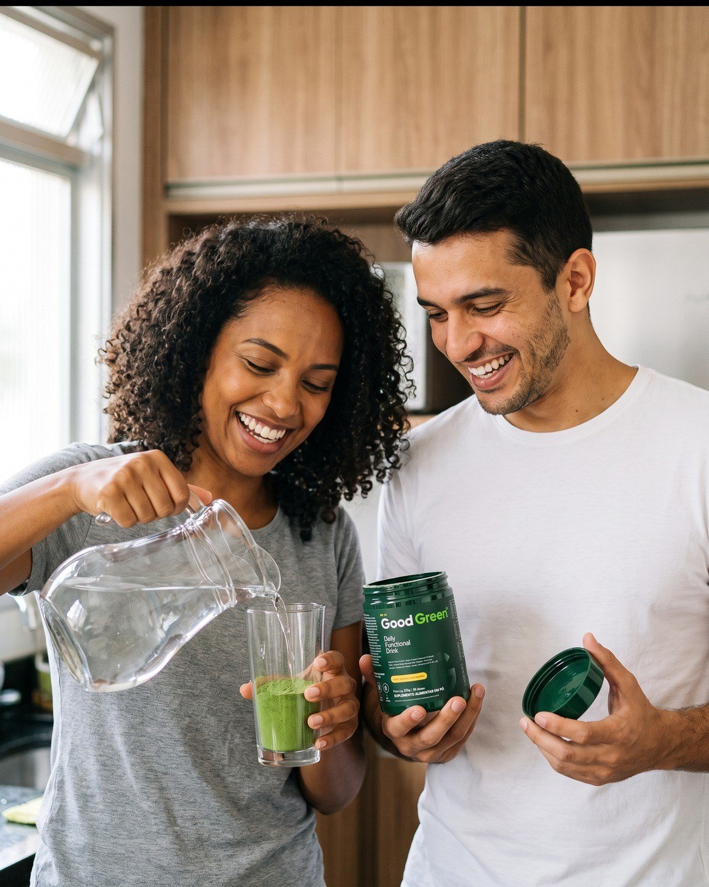
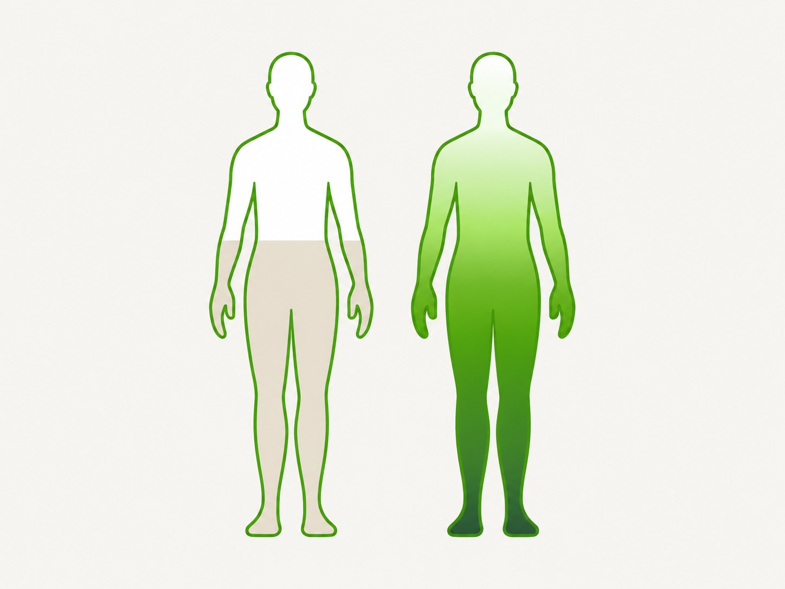
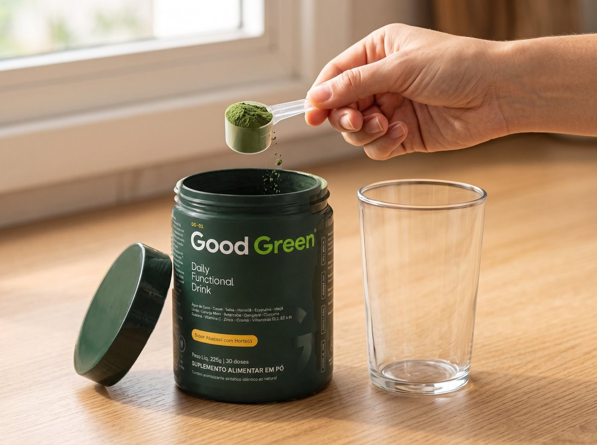
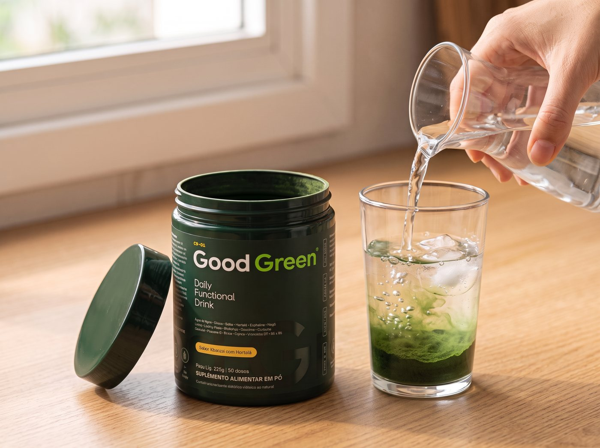
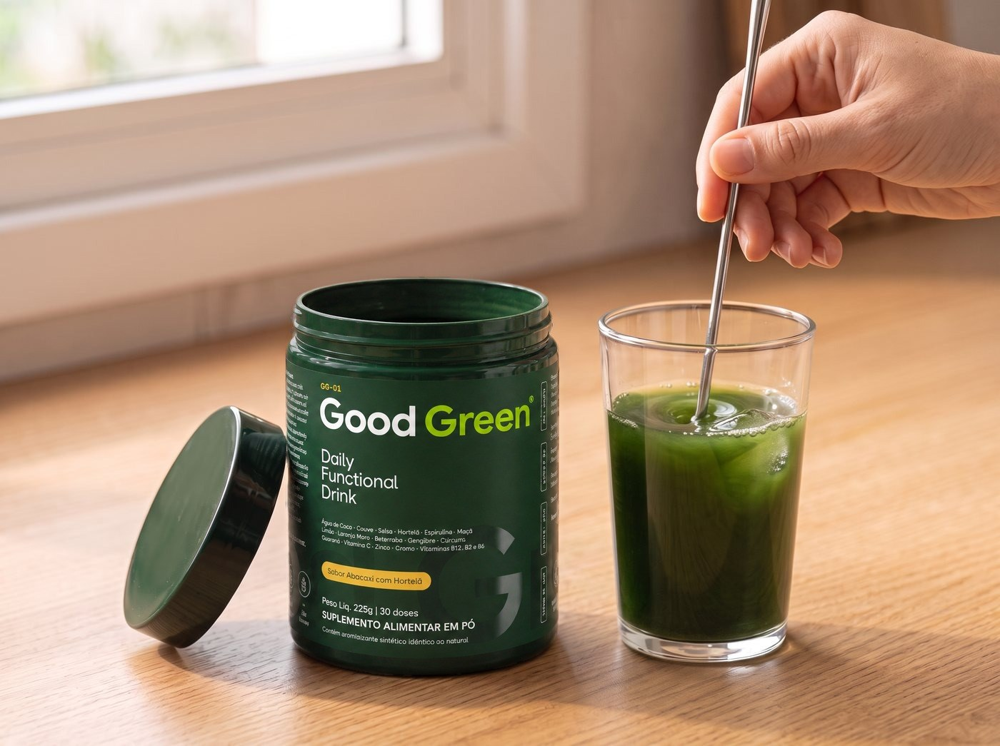

Couve
A folha verde da base da fórmula. É ela que coloca verde de verdade no seu dia.
Uma medida de 7,5 g em 300 ml de água: couve, espirulina, gengibre, guaraná, vitaminas e minerais. Sabor abacaxi com hortelã.

Com couve, espirulina, vitaminas, minerais e a cafeína do guaraná, a Good Green foi pensada para colocar verde no seu dia de um jeito prático. É para você que:





Por que isso importa? Em vez de lavar, cortar e bater, uma medida com couve, espirulina, vitaminas e minerais. Por porção: 45 mg de vitamina C, 100% do VD de B6 e B12 e 571% do VD de cromo.
para lavar, cortar, bater e coar o suco verde em casa:
para uma medida de Good Green em 300 ml de água, com:
A folha verde da base da fórmula. É ela que coloca verde de verdade no seu dia.

Microalga verde-escura. É ela que dá ao pó esse verde profundo.

A cafeína natural da fórmula: 75 mg por porção.

Raízes que dão fundo ao sabor abacaxi com hortelã.



Depoimentos reais de creators e clientes entram aqui antes da publicação, com as palavras de cada pessoa.
Uma bebida no lugar de vários passos e vários potes.
| Good Green | Separado | |
|---|---|---|
| Couve, espirulina, gengibre e cúrcuma | suco caseiro | |
| Vitaminas C, B2, B6 e B12 | outro pote | |
| Cromo e zinco | outro pote | |
| Cafeína do guaraná | outro produto | |
| Pronto em 30 segundos | lavar, cortar, bater | |
| Sabor abacaxi com hortelã | depende da receita | |
| Total | uma medida · R$ — por dose | vários potes |


No primeiro pedido da assinatura, enquanto durar o lote.
Pause ou cancele quando quiser, sem multa.
3 potes a cada 90 dias, chegando antes de acabar.
Este produto não é um medicamento. Não exceder a recomendação diária de consumo indicada na embalagem. Indicado para maiores de 19 anos. Não deve ser consumido por gestantes, lactantes e crianças. Contém cafeína (guaraná). Produto notificado, dispensado de registro conforme RDC 240/2018. Garrafa de vidro de brinde válida para o primeiro pedido da assinatura, enquanto durar o lote.